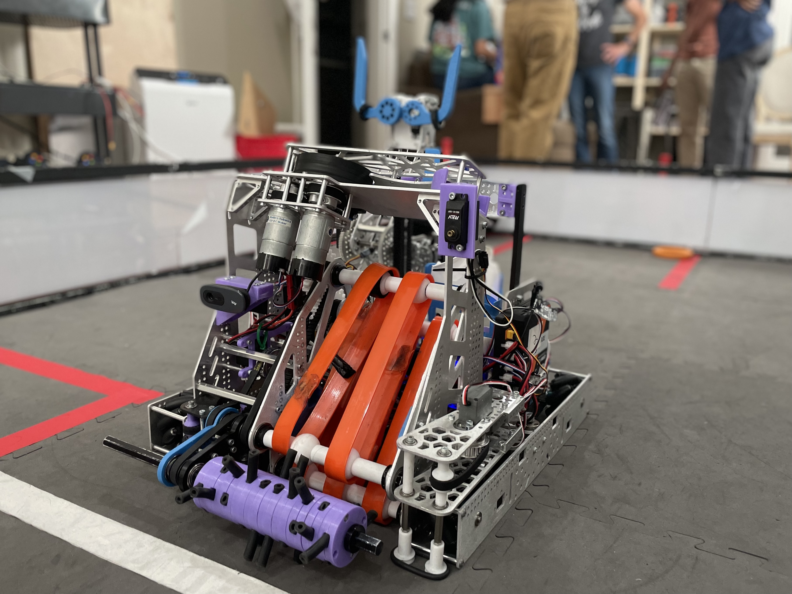
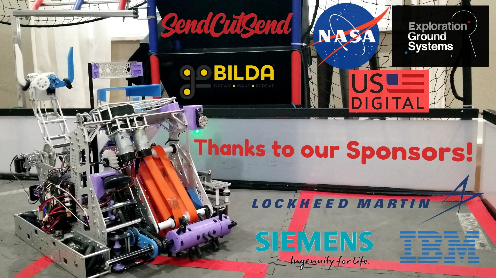

April 2021

Welcome to the April 2021/League Championship Newsletter! As promised last
month, this newsletter is focused on our portfolio and judging since we shifted our focus for the
League championship. Therefore, we are going to cover all of the new videos, outreach progress, and
the portfolio we've made instead of the robot-centric newsletter we normally have.
Leagues Robot Recap
We've changed very little on the robot in the last month other than changes
specifically oriented around consistency. This included one major software change and one hardware
change. Beyond that, the time spent with the robot was used for videos such as the robot reveal and
control video(shown to the right) and preparation for the portfolio and presentation.
Software
To cut down on the time wasted with power shots in endgame, we finally got a
working program that does it autonomously. Not only does this cut the average time we spend on power
shots in half, but it also made them more consistent than we were ever able to achieve manually.
While there is still some tweaking that needs to be done to get it to work every time, we plan to
continue using it and are excited to implement more driver aids like this in the future. After
seeing how consistent it was in matches, we are also hoping to implement it in autonomous to earn an
extra few points where possible.
Transfer
We made yet another attempt at keeping the transfer from jamming and we are
getting closer. This time, we made a cylindrical funnel that secures the rings instead of allowing
them to shift around as they had previously. While this kept the rings in place and worked more
consistently than previous designs, it still jammed occasionally although not as severely as it used
to. It is, however, still an improvement over the last one and we plan to improve upon it for
states.
Robot Reveal
To promote our robot this year, we made a robot reveal(shown to left) for the
FIRST Updates Now reveal night. These are a lot of fun to make and they spread our robot to a wider
audience which makes the event a very cool gateway to conversation with teams we wouldn't otherwise
talk to. If you want to see or show someone what our robot does in the most fast-paced and exciting
way, this is the video to do so.
Robot Summary & Match Video
The League Championship did prove to us that we are capable of scoring points
consistently. By slowing things down a little bit and being more cautious, we were able to score an
average of 263 points at this meet which was significantly higher than previous meets although we
didn't reach a new high score (the match shown to the left is 294 points). This becomes extremely
important as every match counts at these high-level competitions unlike qualifiers where the top 10
matches count towards our ranking of the 36 qualifying matches we played this season. Therefore, we
are planning on keeping this slightly slower, steadier pace at States to ensure that we average the
highest score we possibly can.
Leauges Overall Recap - Inspire Award!!
With a lot of hard work, dedication, and support from friends, family, and sponsors, we were able to
win the Inspire Award at the League Championship! The Inspire Award is the top overall award at any
FIRST Tech Challenge competition and it advances us to the state competition! In order to win this
award, we had to have not only a good robot but also a good presentation and portfolio. Our
portfolio was phenomenal (thank you Krithika) and unlike anything that the judges had seen before
which gave us the leg up on everyone else.
Here's a list of all the awards we won at the competition:
-
Motivate Award - 2nd place
-
Control Award - 3rd place
-
Collins Aerospace Innovate Award - 3rd place
-
Connect Award - 2nd place
-
Think Award - 2nd place
-
Robot Ranking - 3rd place
-
Inspire Award - 1st place
Summary

Now that we're going to the state competition, the season isn't over yet! Our judging sessions and
robot runs are scattered throughout the second half of may so we are still working full steam ahead
for the time being. Therefore, there will likely be an end-of-season newsletter that comes out in
early June so stay tuned for that!
For now, here is a summary and some things we didn't cover:
-
The robot is in its near final state and we achieved an average of 263 points and came in
3rd place for robot at the League Championship
-
We won the Inspire Award and are advancing to the State Championship!!
-
We publicly released our portfolio due to the demand for it after the League Championship
-
First Flight Crew Videos are now live on youtube and you can watch them here
-
A large off-season project is in the works to help get our younger members up to speed for
the start of the season next year. We are also planning on using it to test new scheduling
and team organization systems.
-
If you are interested in judging or helping us with our presentation, contact us!
-
We are looking for new members! If you know any students 7th grade and up who would be a
good candidate for the team and live locally, be sure to let us know!
-
Krithika and Chase have been selected as Co-Leads for the 2021-2022 season!
As always, thank you to our sponsors, family, friends, and mentors for your support. As our season
comes to a close, we are beginning to prepare for next season and outside of the state competition
are focussing on integrating new ideas and policies to help us do even better. To our 5 graduating
seniors, we thank you for all of the dedication and support you have brought to this team and we
can't wait to have you back as mentors next year! Thank you!